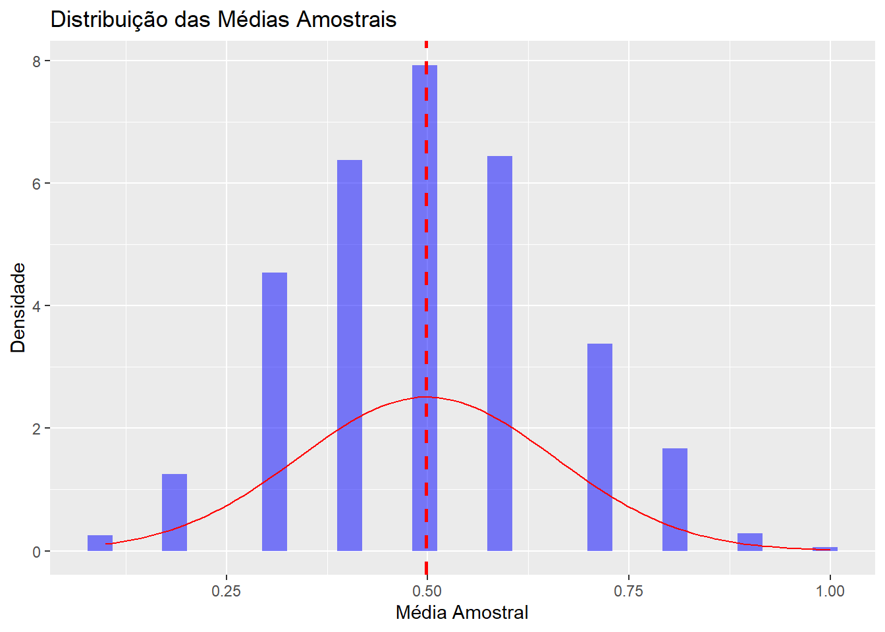

6.1 Llaudet, E. and Imai, K. (2022). Data analysis for social science: A friendly and practical introduction. Princeton University Press. Chapter 3: Inferring Population Characteristics via Survey Research.
In survey research, we collect data from a subset of observations in order to understand the target population as a whole. The subset of individuals chosen for study is called a sample. The number of observations in the sample is represented by \(n\), and the number of observations in the target population is represented by \(N\). (p. 52)
A representative sample accurately reflects the characteristics of the population from which it is drawn. Characteristics appear in the sample at similar rates as in the population as whole. (p. 52)
[…] the random selection of individuals from the population makes the sample and the target population identical to each other, on average, in both observed and unobserved traits. (p. 53)
[On potential challenges] First, to implement random sampling, we need the complete list of observations in the target population. This list is known as the sampling frame. In practice, the sampling frame of a population can be difficult to obtain. Lists of residential addresses, emails, or phone numbers often do not include the entire population of interest. More problematically, the individuals missing tend to be systematically different from those included. (p. 54)
Before continuing with the analysis, it is worth noting that removing observations with missing values from a dataset might make the remaining sample of observations unrepresentative of the target population, thereby rendering our inferences about the population characteristics invalid. Here, for example, if respondents who refused to prove their level of education were all in favor of Brexit, our analysis of the new dataframe, bes1, would undermine the level of support for Brexit. (p. 62)
On prop.tables, we can use the margin argument to make set the reference group (that is, if the values will add up to 1 at the column level or the row level): prop.table(table(dataset$var1, dataset$var2), margin = 1).
Another option [other than histograms and tables] for measuring the differences between Brexit supporters and non-supporters in terms of age distribution is to compute and compare descriptive statistics. Descriptive statistics numerically summarize the main traits of the distribution of a variable.
We can use two different types of descriptive statistics:
Measures of centrality, such as the mean and the median, summarize the center of the distribution.
Measures of spread, such as the standard deviation and the variance, summarize the amount of variation of the distribution relative to its center. (p. 71-72)
The mathematical formulation of the standard deviation:
Roughly speaking, the standard deviation of a variable provides the average distance between the observations and the mean (in the same unit of measurement as the variable). (p. 73)
As we will see in detail later in the book, one of the distinct characteristics of normal distributions is that about 95% of the observations fall within two standard deviations from the mean […]. (p. 75)
💡When plotting scatterplots, a nice way to analyze the data is to divide the plot in 4 quadrants, according to the mean (or maybe the median) of each variable. As a result, each quadrant will have an objective interpretation (above both means, below both means and so on).
The correlation coefficient ranges from -1 to 1, and it captures the following two characteristcs of the relationship between two variables:
the direction of their linear association, that is, the sign of the slope of the line of best fit (which is the line that best summarizes the data)
the strength of their association, that is, the degree to which the two variables are linearly associated with each other (p. 82)
The correlation is positive whenever the two variables move in the same direction relative to their respective means, that is, when high values in one variable are likely to be associated with high values in the other, and low values in one variable are likely to be associated with low values in the other. (p. 82)
Understanding the correlation formula: first, the z-score, which is the number of standard deviations the observation is above or below the mean:
\[
Z_i^X = \dfrac{X_i - \bar{X}}{\text{sd}(X)}
\]
Computing the correlation requires us to convert the observations of both variables to z-scores. Then, the correlation coefficient is calculated as the average of the products of the z-scores of \(X\) and \(Y\):
As a result, the sign of the correlation coefficient will be:
positive when the two variables tend to move in the same direction relative to their respective means, that is, when above-average values in one variable are usually associated with above-average in the other […], and when below-average values in one variable are usually associated with below-average values in the other. (p. 86)
[…] if two variables have a correlation coefficient of zero, it does not necessarily mean that there is no relationship between them. Is just means that there is no linear relationship between them. For example, the two variables depicted in the figure in the margin have a strong parabolic relationship. Their correlation is approximately zero, however, because there is no line that would summarize the relationship well. (p. 88)
6.2 Kellstedt, P. M.,; Whitten, G. D. (2018). The fundamentals of political science research. Cambridge University Press., Cap. 6: Probabilidade e inferência estatística.
Um evento é o resultado de uma observação aleatória. Dois ou mais eventos podem ser chamados de eventos independentes se a realização de um dos eventos não afeta a realização dos demais. Por exemplo, o lançamento de dois dados representa eventos independentes, porque o lançamento do primeiro dado não afeta o resultado do lançamento do segundo.
A probabilidade possui algumas propriedades fundamentais. Primeiro, todos os eventos possuem alguma probabilidade de ocorrer e essa chance varia de 0 a 1. Uma probabilidade de valor 0 significa que o evento é impossível, e uma probabilidade com valor igual a 1 significa que o evento acontecerá com absoluta certeza. Por exemplo, se lançarmos dois dados honestos e somarmos as faces voltadas para cima, a probabilidade da soma das faces ser igual a 13 é 0, uma vez que o valor mais alto possível é 12.
Segundo, a soma de todos os eventos possíveis deve ser exatamente 1. Ou seja, sempre que fazemos uma observação aleatória de um conjunto de eventos possíveis, devemos observar um desses eventos. Por exemplo, se você jogar uma moeda para cima, a probabilidade de o resultado ser cada é de \(1/2\), a probabilidade de ser coroa é de \(1/2\) e a probabilidade de ser cara ou coroa é de \(1\), porque \(1/2 + 1/2 = 1\).
Terceiro, se (mas somente se!) dois eventos forem independentes, então a probabilidade de esses dois eventos ocorrerem é igual ao produto das chances individuais. Então, se você tem uma moeda não viciada e lançá-la três vezes – tenha em mente que cada lançamento é um evento independente –, a chance de o resultado dos três lançamentos ser igual a coroa é de \(1/2 \times 1/2 \times 1/2 = 1/8\). (p. 154)
A distribuição normal […]. Primeiro, ela é simétrica em torno da sua média, de tal modo que a moda, a mediana e a média são iguais. Segundo, a distribuição normal possui áreas abaixo da curva com distâncias específicadas definidas a partir da média. Começando da média e adicionando um desvio padrão para cada uma das direções, temos uma cobertura de 68% de toda a área abaixo da curva. Adicionando mais um desvio padrão, passamos a ter 95% do total da área. Adicionando um terceiro desviopadrão em cada direção, temos 99% da área total da curva capturada.
Imaginamos que estamos coletando uma amostra de seiscentos lançamentos não uma, mas um número infinito de vezes. Podemos chamar essa hipotética distribuição das médias amostrais de distribuição amostral. Ela é hipotética, porque cientistas quase nunca podem coletar mais de uma amostra para a população subjacente em um determinado ponto do tempo.
Se seguirmos esse procedimento, podemos obter a média das amostras e as expor graficamente. Algumas estariam acima de 3,50, outras abaixo e algumas seriam exatamente 3,50. Porém, é nesse ponto que temos o resultado-chave: a distribuição amostral terá distribuição normal, embora a distribuição de frequência subjacente, claramente, não seja normal.
Esse é o insight do teorema do limite central. Se pudéssemos imaginar um número infinito de amostras aleatórias e plotássemos a média de cada uma dessas amostras aleatórias em um gráfico, essas médias amostrais seriam normalmente distribuídas. Adicionalmente, a média da distribuição amostral seria igual à média da verdadeira população. (p. 158-159)
Mas sabemos que nossa amostra de seinscentos lançamentos pode ser ligeiramente diferente da média verdadeira da população, podendo ser tanto um pouco maior quanto um pouco menor. O que podemos fazer, portanto, é usar nosso conhecimento de que a distribuição amostral é normal e invocar a regra 68-95-99 para criar um intervalo de confiança sobre a provável localização da média da população.
É possível que estejamos errados e que a média da população esteja fora do intervalo? Sim, e ainda sabemos quão provável é que ela esteja fora do intervalo. Existem 2,5% de chance de que a média da população seja menor que 3,33 e 2,5% de chance de que a média da população seja maior que 3,61, em um total de 5% de chance de que a média da população não esteja no intervalo de 3,33 a 3,61.
O exemplo da aprovação do Obama, explorada por uma pesquisa da NBC News e o Wall Street Journal com mil americanos:
Então a taxa de aprovação do Obama, estimada a partir dos dados do survey, fica entre 43,8% e 50,2%.
Se estivermos interessados em estimar valores populacionais, nos baseando em nossas amostras, com a maior precisão possível, então é desejável ter um intervalo de confiança mais estreito do que alargado.
Como podemos conseguir isso? Pela fórmula do erro-padrão da média fica claro, utilizando álgebra simples, que podemos obter valores menores para o erro padrão de duas formas: com um numerador menor ou um denominador maior. Como obter um numerador menor – o desvio-padrão da amostra – não é algo que podemos fazer na prática, podemos considerar que é possível ter um denominador maior – isto é, aumentar o tamanho da amostra.
Amostras grandes reduzirão o tamanho dos erros-padrão e amostras menores aumentarão o tamanho dos erros-padrão.
6.3 Meireles, F., e Russo, G. (2022). Pesquisas eleitorais no Brasil: tendências e desempenho. Estudos Avançados, 36, 117-131.
Este artigo analisa as estimativas de mais de 2 mil pesquisas eleitorais com os resultados de cinco eleições municipais e nacionais no Brasil entre 2012 e 2020. Em particular, examinamos como fatores previstos nos planos amostrais, como tamanho da amostra e modo de aplicação de entrevistas, e outros como a distância temporal da data de realização das pesquisas até o dia do pleito, predizem diferenças entre estimativas e resultados oficiais. Entre outros, mostramos que pesquisas de véspera com amostras maiores tiveram resultados mais próximos dos apurados nas urnas no período, assim como pesquisas conduzidas perto do dia dos pleitos. Também documentamos que estimativas de pesquisas em eleições nacionais, especialmente para a Presidência e Governos estaduais em segundo turno, tendem a ser mais próximas dos resultados do que em outras disputas. No geral, portanto, os achados indicam que as pesquisas eleitorais no Brasil têm desempenho similar às realizadas em outros contextos. (Resumo, p. 130)
Não obstante a existência de fatores relacionados aos erros em surveys eleitorais, a evidência sistemática de diferentes países mostra que pesquisas nas semanas que antecedem um pleito fornecem, em média, estimativas razoavelmente precisas do que a apuração dos votos revelará – erros têm, ao contrário, apenas diminuído ao longo dos anos (Jennings; Wlezien, 2018). Em certo sentido, dadas as dificuldades envolvidas de se desenhar planos amostrais com informações nem sempre atualizadas e em meio a diferentes fontes não aleatórias de erro, é surpreendente o desempenho das pesquisas eleitorais ao antecipar tendências e resultados, ainda que esse não seja o objetivo ou a função das pesquisas (Gelman, 2021). (p. 118)
Nossos dados revelam padrões importantes sobre as pesquisas eleitorais no país. Em primeiro lugar, documentamos uma crescente no uso de abordagens telefônicas no período, bem como ligeiro aumento no tamanho das amostras utilizadas ao longo do tempo em eleições nacionais e estaduais. Quanto aos seus resultados, as estimativas eleitorais indicam que o erro médio das nossas pesquisas de véspera é certa de 1.8 ponto percentual (pp), o que pode ser traduzido em uma margem de erro de 6.8 pp, maior do que o convencionalmente reportado por institutos. Isso dito, tal taxa é comparável à de outros países e, mais, há grande variação entre pesquisas: as de presidentes e de governo do estado no segundo turno cometem, em média, erros menores, assim como pesquisas com maiores amostras e em pleitos com menores taxas de eleitores indecisos. (p. 119)
Vale notar que as pesquisas eleitorais no Brasil têm alguns de seus aspectos regulados pela legislação eleitoral. Entre outros, institutos de pesquisa que queiram divulgar suas estimativas precisam fazer o registro do plano amostral a ser implementado com antecedência, reportando as datas em que a coleta dos dados será feita, a data de divulgação dos resultados, o tamanho da amostra e detalhes de metodologia como uso de quotas e discriminação dos locais onde entrevistas são aplicadas. Em razão disso, por exemplo, margens de erro divulgadas no momento do registro das pesquisas não podem contemplar o efeito do uso de pós-estratificação para corrigir desvios nas amostras, uma vez que o efeito de tais procedimentos só podem ser quantificados após o encerramento da coleta de dados – o que contribui para subestimar possíveis erros aleatórios e não aleatórios, isto é, erros totais (Gramacho, 2013). (p. 121)
6.4 Anotações de aula
Em estatística, falamos sobre inferência como “realizar afirmações sobre dados que não conhecemos, a partir de dados conhecidos”. No fim das contas, falar sobre uma população a partir de uma amostra. Isso está diretamente associado ao processo gerador dos dados, i.e., o processo subjacente que está gerando os meus dados.
A população são todos os casos relevantes para a minha análise. Uma amostra, então, é um subconjunto desses casos relevantes.
A seleção aleatória de elementos da população é a chave da amostragem probabilística:
Ausência de viés: amostragem probabilística garante que cada membro da população tenha uma chance de ser incluído na amostra.
Convergência: a variabilidade natural das amostras se equilibra à medida que \(N\) aumenta, levando a média amostral a se aproximar da verdadeira média da população.
6.4.1 Lei dos Grandes Números
LGN é um princípio da teoria da probabilidade que descreve o comportamento da média de uma amostra à medida que ela aumenta. À medida que aumento a amostra, vou me aproximando da média “verdadeira”, i.e., a média da população.
Em uma amostra pequena, um único sorteio pode distorcer a média amostral. Em uma amostra maior, sorteios extremos se equilibram e levam a média amostram a se aproximar da média da população. Para fins práticos, \(N \geq 100\) reduz bastante a influência de outliers na estimativa da média.
Podemos pensar em 100 retiradas de 10 bolinhas, ou 1000 retiradas de 10 bolinhas. Neste caso, nossa amostra tem o mesmo tamanho, mas expandimos o número de amostras e calculamos a média de cada uma delas. Então, a amostra tem o mesmo tamanho: \(n = 10\). A média dessas médias é a média amostral.
6.4.2 Teorema Central do Limite
À medida que extraímos mais amostras, a distribuição da estimativa começa a assumir a forma de uma distribuição normal.
A distribuição da soma (ou média) das variáveis aleatórias independentes tende a uma distribuição normal à medida que o número de amostras aumenta, independentemente da distribuição original das variáveis (binomial, por exemplo).
library(ggplot2)# cria uma lista com 1000 amostras de 10 bolinhas, podendo elas serem azuis (1) ou vermelhas (0)set.seed(123)bolinhas <-replicate(1000, sample(c(0, 1), size =10, replace =TRUE))# isso aqui tem 1000 amostras de 10 bolinhasbolinhas <-as.data.frame(bolinhas)# calcula a média de cada amostramedias <-apply(bolinhas, 2, mean)# plota a distribuição das médiasggplot(data.frame(medias), aes(x = medias)) +geom_histogram(aes(y = ..density..), bins =30, fill ="blue", alpha =0.5) +# inclui a linha da média amostral (media das medias)geom_vline(aes(xintercept =mean(medias)), color ="red", linetype ="dashed", size =1) +stat_function(fun = dnorm, args =list(mean =mean(medias), sd =sd(medias)), color ="red") +labs(title ="Distribuição das Médias Amostrais",x ="Média Amostral",y ="Densidade")
Warning: Using `size` aesthetic for lines was deprecated in ggplot2 3.4.0.
ℹ Please use `linewidth` instead.
Warning: The dot-dot notation (`..density..`) was deprecated in ggplot2 3.4.0.
ℹ Please use `after_stat(density)` instead.

Esse é o insight do teorema central do limite. Se pudéssemos imaginar um número infinito de amostras e plotássemos a média de cada uma dessas amostras, essas médias amostrais seriam normalmente distribuídas. Adicionalmente, a média da distribuição amostral seria igual à média da verdadeira população.
De fato, outra propriedade interessante é a dispersão da média amostral. A média amostral tende a ser menos dispersa do que a média populacional. Isso é chamado de erro padrão da média (EPM). O EPM é a medida da variabilidade das médias amostrais em torno da média populacional. O EPM é calculado como o desvio padrão da população dividido pela raiz quadrada do tamanho da amostra:
\[
EPM = \dfrac{\sigma}{\sqrt{n}}
\]
onde \(\sigma\) é o desvio padrão da população e \(n\) é o tamanho da amostra. O EPM diminui à medida que o tamanho da amostra aumenta. Isso significa que, quanto maior a amostra, mais precisa será a estimativa da média populacional. Isso é importante porque nos permite fazer inferências sobre a população com base em uma amostra.
6.4.3 Intervalo de Confiança
Um intervalo de confiança é uma faixa de valores que, com um certo nível de confiança, contém o valor verdadeiro de um parâmetro populacional. O intervalo de confiança é calculado a partir da média amostral e do erro padrão da média.
O intervalo de confiança é calculado como: \[
IC = \bar{X} \pm Z_{\alpha/2} \cdot EPM
\]
onde \(\bar{X}\) é a média amostral, \(Z_{\alpha/2}\) é o valor crítico da distribuição normal padrão correspondente ao nível de confiança desejado (por exemplo, 1,96 para um intervalo de confiança de 95%) e \(EPM\) é o erro padrão da média.
O intervalo de confiança fornece uma estimativa da incerteza associada à média amostral. Se o intervalo de confiança for estreito, isso indica que a média amostral é uma boa estimativa da média populacional. Se o intervalo de confiança for amplo, isso indica que a média amostral é uma estimativa menos precisa da média populacional.
O valor de 1.96 é o valor crítico da distribuição normal padrão que corresponde a um nível de confiança de 95%. Isso significa que, se repetirmos o processo de amostragem muitas vezes, aproximadamente 95% dos intervalos de confiança calculados conterão a média populacional verdadeira. Além disso, o intervalo de 95% é arbitrário: por exemplo, 68% de confiança corresponde a 1 desvio padrão, 99% de confiança corresponde a 2.58 desvios padrão, e assim por diante.
Vamos supor o caso em que queremos estimar a aprovação do Lula. Pegamos 1000 amostras e estimamos uma média de aprovação de 32%. O desvio padrão, portanto, será calculado como:
\[
s = \sqrt{ 0.32 \cdot (1 - 0.32) } = 0.47,
\]
e o erro padrão da média será: \[
\text{EPM} = \dfrac{0.47}{\sqrt{1000}} = 0.015
\]
O intervalo de confiança de 95% para a média amostral é dado por: \[
\text{IC} = 0.32 \pm 1.96 \cdot 0.015
\]
Ou seja, o intervalo de confiança é dado por: \[
\text{IC} = (0.32 - 0.03, 0.32 + 0.03) = (0.29, 0.35)
\]
6.4.4 A variância da Bernoulli
💡Dedico essa parte das anotações a provar o motivo de a variância da Bernoulli poder ser escrita como \(p(1-p)\), sendo \(p\) a proporção de \(X = 1\) em um conjunto.
Quando estamos tratando de uma variável aleatória \(X\) que segue uma distribuição Bernoulli, sabemos que os valores de \(X\) só assumem valores em \(\{0, 1\}\). Além disso, sabemos que \(\mathbb{E}[X] = p\). A fórmula da variância é:
No entanto, sabemos que, como as observações de \(X\) só assume valores em \(\{0, 1\}\), vale que \(\mathbb{E}[X^2] = \mathbb{E}[X] = p\) e que \((\mathbb{E}[X])^2 = p^2\). Com efeito: